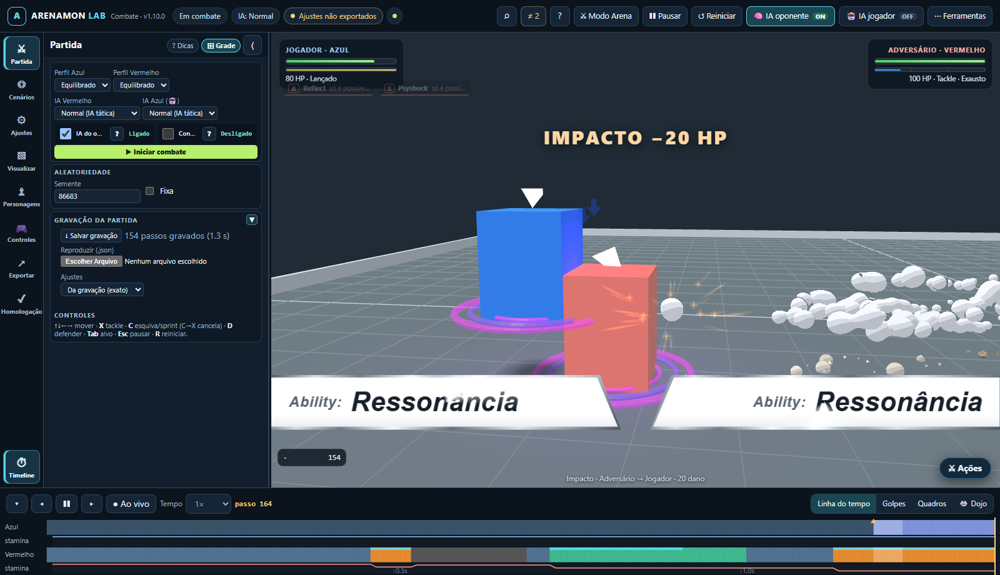

← Voltar aos testes · Abrir o jogo
Habilidades passivas no jogo principal
Resultado: aprovado no Edge offline. As placas aparecem nas duas extremidades, os nomes têm uma palavra e o efeito 3D acompanha posição, altura e orientação do lutador. O painel oferece três movimentos de moldura e ajuste do texto.

Dados verificáveis: resultado.json. Teste: prototypes/combat-lab/test/passive-abilities.browser.mjs.